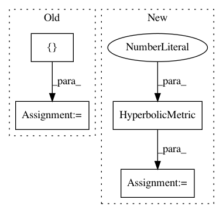

f968d7bec6552b6986731a4dfbb0a524d01a29a2,examples/plot_kmean_poincare_disk.py,,main,#,22
Before Change
Centroids = K_means.fit(X=Merged_Clusters, max_iter=5)
Data_Labels = gs.array([])
for data in Merged_Clusters:
Data_Labels = gs.append(Data_Labels, K_means.predict(data))
print("Centroids", Centroids)
visualization.plot(
After Change
Merged_Clusters = gs.concatenate((Cluster_1, Cluster_2), axis=0)
manifold = HyperbolicSpace(dimension=2, point_type="poincare")
metric = HyperbolicMetric(dimension=2, point_type="poincare")
manifold_e = HyperbolicSpace(dimension=2)
metric_e = HyperbolicMetric(dimension=2)
x_b = gs.rand(10,2) * 1/2
x_e = manifold_e.intrinsic_to_extrinsic_coords(gs.rand(10,2))
e = metric_e.dist(x_e, x_e)
b = metric.dist(x_b, x_b+0.1 )
print("b shape", b.shape)
print("e shape", e.shape)
visualization.plot(
Merged_Clusters,
ax=ax,
space="H2_poincare_disk",
marker=".",
color="black",
point_type=manifold.point_type)
k_means = RiemannianKMeans(riemannian_metric=metric,
n_clusters=2,
init="random",
)
centroids = k_means.fit(X=Merged_Clusters, max_iter=2)
labels = k_means.predict(X=Merged_Clusters)
visualization.plot(
centroids,
ax=ax,
In pattern: SUPERPATTERN
Frequency: 3
Non-data size: 4
Instances
Project Name: geomstats/geomstats
Commit Name: f968d7bec6552b6986731a4dfbb0a524d01a29a2
Time: 2020-01-16
Author: thomas.l.p.gerald@gmail.com
File Name: examples/plot_kmean_poincare_disk.py
Class Name:
Method Name: main
Project Name: geomstats/geomstats
Commit Name: 1a3b0e387f3f1edb668833602873dea492822c2a
Time: 2020-01-16
Author: yann.cabanes@u-bordeaux.fr
File Name: geomstats/geometry/poincare_polydisk.py
Class Name: PoincarePolydiskMetric
Method Name: __init__
Project Name: geomstats/geomstats
Commit Name: b8c02dadce36952bb6ad305df5b3d57fc71dc52b
Time: 2020-01-16
Author: yann.cabanes@u-bordeaux.fr
File Name: geomstats/geometry/poincare_polydisk.py
Class Name: PoincarePolydiskMetric
Method Name: __init__